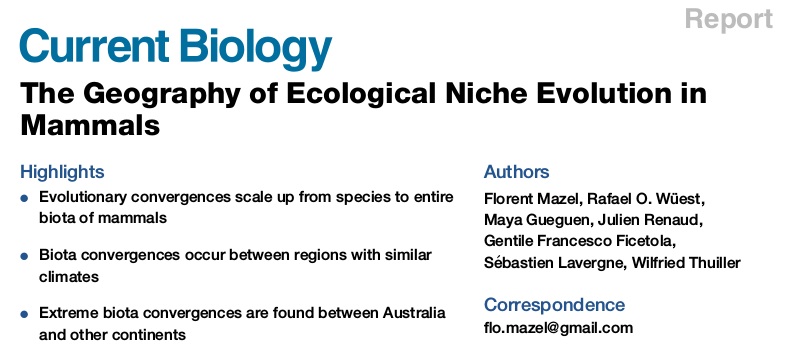
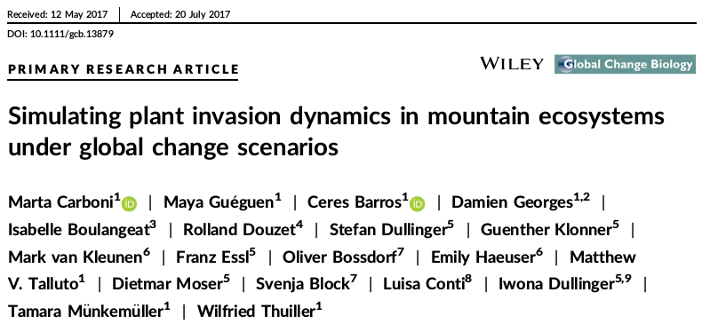
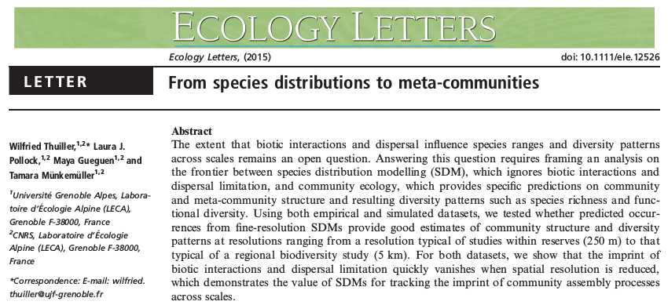
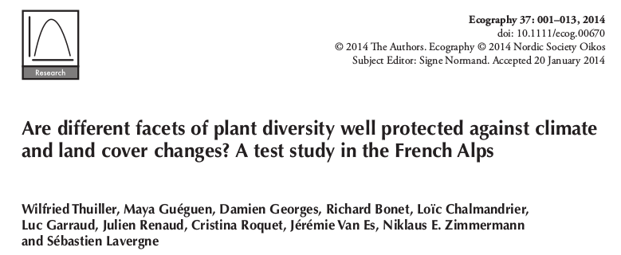

- Capblancq, T. , Morin, X. , Guéguen, M. , Renaud, J. , Lobreaux, S. and Bazin, E. (2020). Climate associated genetic variation in Fagus sylvatica and potential responses to climate change in the French Alps. Journal of Evolutionary Biology. 33. https://doi:10.1111/jeb.13610
- Sherpa, S. , Renaud, J. , Guéguen, M. , Besnard, G. , Mouyon, L. , Rey, D. and Després, L. (2020). Landscape does matter: Disentangling founder effects from natural and human-aided post-introduction dispersal during an ongoing biological invasion. Journal of Animal Ecology. https://doi:10.1111/1365-2656.13284
- Cerasoli, F. , Thuiller, W. , Guéguen, M. , Renaud, J. , D’Alessandro, P. and Biondi, M. (2019). The role of climate and biotic factors in shaping current distributions and potential future shifts of European Neocrepidodera (Coleoptera, Chrysomelidae). Insect Conservation and Diversity. https://doi:10.1111/icad.12376
- Dufour, P. , Descamps, S. , Chantepie, S. , Renaud, J. , Guéguen, M. , Schiffers, K. , Thuiller, W. and Lavergne, S. (2019). Reconstructing the geographic and climatic origins of long‐distance bird migrations. Journal of Biogeography. https://doi:10.1111/jbi.13700
- Menchetti, M. , Guéguen, M. and Talavera, G. (2019). Spatio-temporal ecological niche modelling of multigenerational insect migrations. Proceedings of the Royal Society B: Biological Sciences. 286. 20191583. https://doi:10.1098/rspb.2019.1583
- Ondo, I. , Thuiller, W. , Guéguen, M. and Pironon, S. (2019). A new R application for Modelling Species Distribution. https://doi:10.13140/RG.2.2.23431.83363
- Sherpa, S. , Guéguen, M. , Renaud, J. , Blum, M. , Gaude, T. , Laporte, F. , Akiner, M. M. , Alten, B. , Aranda, C. , Barré-Cardi, H. , Bellini, R. , Paulis, M. , Chen, X-G. , Eritja, R. , Flacio, E. , Foxi, C. , Ishak, I. , Kalan, K. , Kasai, S. and Després, L. (2019). Predicting the success of an invader: Niche shift versus niche conservatism. Ecology and Evolution. https://doi:10.1002/ece3.5734
- Thuiller, W. , Guéguen, M. , Renaud, J. , Karger, D. N. and Zimmermann, N. (2019). Uncertainty in ensembles of global biodiversity scenarios. Nature Communications. 10. https://doi:10.1038/s41467-019-09519-w
- Kim, H. , Rosa, I. , Alkemade, R. , Leadley, P. , Hurtt, G. , Popp, A. , Vuuren, D. , Anthoni, P. , Arneth, A. , Baisero, D. , Caton, E. , Chaplin-Kramer, R. , Chini, L , De Palma, A. , Di Fulvio, F. , Di Marco, M. , Espinoza, F. , Ferrier, S. and Fujimori, S. (2018). A protocol for an intercomparison of biodiversity and ecosystem services models using harmonized land-use and climate scenarios. Geoscientific Model Development. 11. 4537-4562. https://doi:10.5194/gmd-11-4537-2018
- Roy, J. , Bonneville, J-M. , Saccone, P. , Ibañez, S. , Albert, C. , Boleda, M. , Guéguen, M. , Ohlmann, M. , Rioux, D. , Clement, J-C. , Lavergne, S. and Geremia, R. (2018). Differences in the fungal communities nursed by two genetic groups of the alpine cushion plant, Silene acaulis: XXXX. Ecology and Evolution. 8. https://doi:10.1002/ece3.4606
  
- Barros, C. , Guéguen, M. , Douzet, R. , Carboni, M. , Boulangeat, I. , Zimmermann, N. E., Münkemüller, T. , Thuiller, W. and Mori, A. (2017). Extreme climate events counteract the effects of climate and land‐use changes in Alpine tree lines. J Appl Ecol, 54: 39-50. https://doi:10.1111/1365-2664.12742
- Carboni M, Guéguen M, Barros C, et al. (2017). Simulating plant invasion dynamics in mountain ecosystems under global change scenarios. Glob Change Biol. 2018;24:e289–e302. https://doi.org/10.1111/gcb.13879
- Mazel, F., Wüest, R., Guéguen, M., Renaud, J., Ficetola, G. F., Lavergne, S. & Thuiller, W. (2017). The Geography of Ecological Niche Evolution in Mammals. Current Biology. 27. https://doi.org/10.1016/j.cub.2017.03.046.
- Thuiller W, Guéguen M, Bison M, et al. (2017). Combining point‐process and landscape vegetation models to predict large herbivore distributions in space and time—A case study of Rupicapra rupicapra. Divers Distrib. 2018;24:352–362. https://doi.org/10.1111/ddi.12684

- Thuiller, W. , Pollock, L. J., Guéguen, M. , Münkemüller, T. and Cornell, H. (2015). From species distributions to meta‐communities. Ecol Lett, 18: 1321-1328. https://doi:10.1111/ele.12526

- Thuiller, W. , Guéguen, M. , Georges, D. , Bonet, R. , Chalmandrier, L. , Garraud, L. , Renaud, J. , Roquet, C. , Van Es, J. , Zimmermann, N. E. and Lavergne, S. (2014). Are different facets of plant diversity well protected against climate and land cover changes? A test study in the French Alps. Ecography, 37: 1254-1266. https://doi:10.1111/ecog.00670